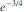
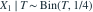
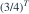

独立同分布为
独立同分布为  ，令
，令  。已知T完全充分。观察到T=3时，
。已知T完全充分。观察到T=3时， 的UMVUE为？
的UMVUE为？- A

- B

- C

- D
我已思考，展开答案与解析
正确答案：D
- 以
 为初始无偏估计。
为初始无偏估计。 
，故条件期望为
。- T=3时为 。
易错提醒把样本均值代入指数函数得到的是插件估计，一般不无偏。
考后回忆 · 条件重建 · 回忆5的普通泊松对照题
依据考试回忆重建；数字、选项和必要条件为补充设定，非原题。
独立同分布为 ，令 。已知T完全充分。观察到T=3时， 的UMVUE为？
为初始无偏估计。
，故条件期望为
。考后回忆 · 条件重建 · 回忆5的普通泊松对照题
依据考试回忆重建；数字、选项和必要条件为补充设定，非原题。